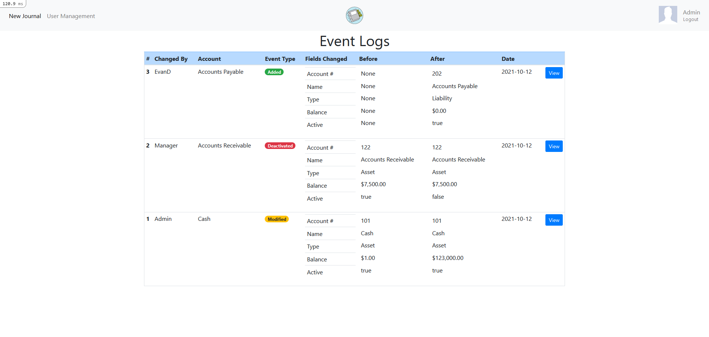
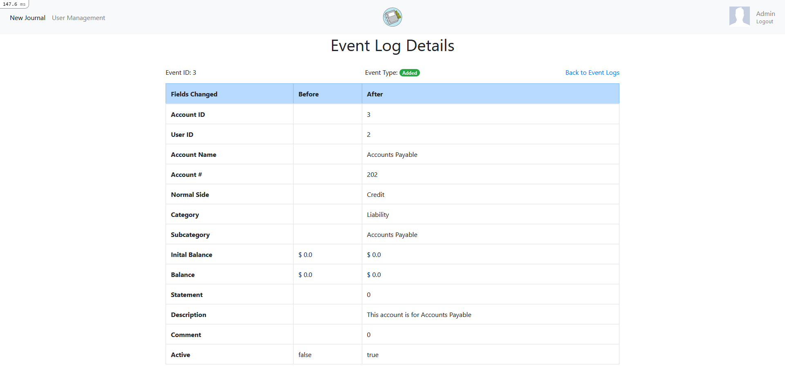
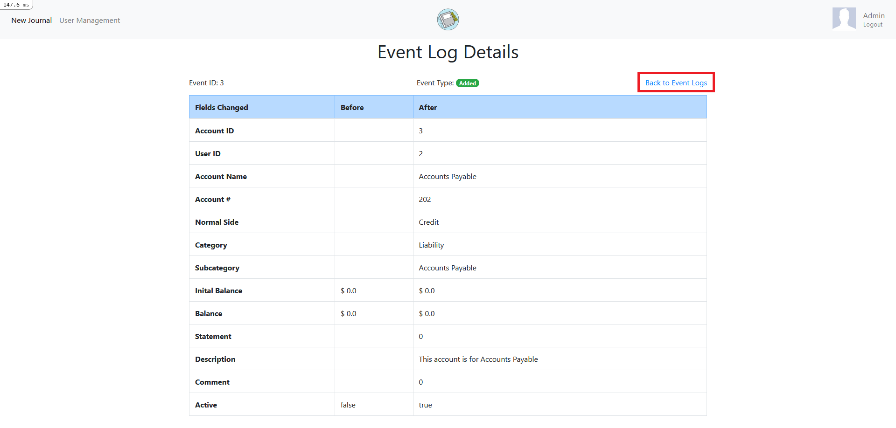

Event Logs
The event logs page shows a history of changes made to the database in Money Binder. Information includes:
- The ID of the user that made the change.
- The username of the user that made the change.
- The name of the account that was changed. An account can be added, deactivated, or modified.
- The fields of the account that were changed.
- What the values in the fields were before the change. None will be displayed if there were no values in the fields before. This will occur when an account is added.
- What the values in the fields are after the change.
- The date the change was made.

Clicking on the View button will take the user to the log entry where additional details can be seen.

To go back to the event logs, click on the Back to Event Logs button.
